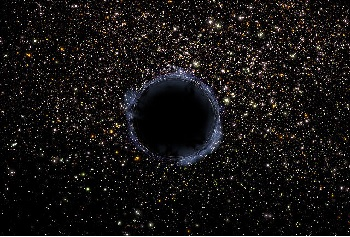
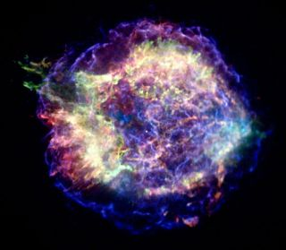

About


YOUR FIRST ADD HERE
-
LET'S BEGIN OUR JOURNEY WITH BIRTH OF A STAR
Clouds of gas are common in our galaxy and in other galaxies like ours. These clouds are called nebulae. A typical nebula is many light-years across and contains enough mass to make several thousand stars the size of our sun. The majority of the gas in nebulae consists of molecules of hydrogen and helium--but most nebulae also contain atoms of other elements, as well as some surprisingly complex organic molecules. These heavier atoms are remnants of older stars, which have exploded in an event we call a supernova.

However some stars are not formed in this way
Want to have a blog like the one above?
If you want to subscribe to the page then contact us on above mentioned social media profiles get it professionally designed by experts
- chal hat
- can't display
- can't display